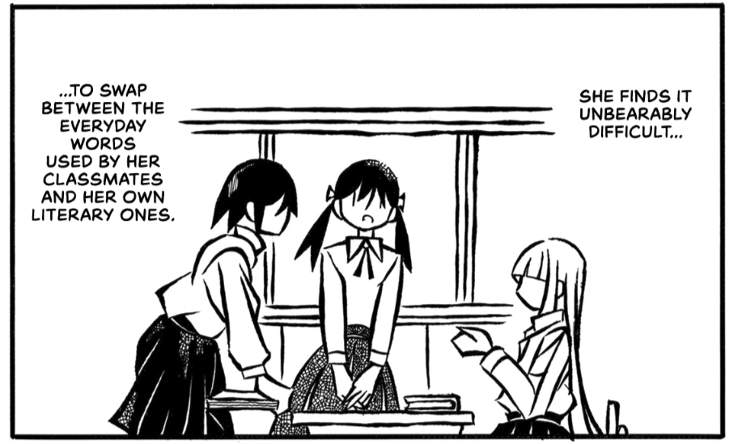

Journal
I often find myself with a lot to say on various topics, but no one to direct my thoughts towards. So, here they are, where they may be explored (or not explored) at the user's discretion and leisure.
You can click on the arrows to see a brief description of each article.
Literature
Dumbing Us Down
An old post from whenever I was in secondary school about the detriments of modern education systems, inspired by the musings of John Taylor Gatto in his book Dumbing Us Down.
A Decision Not to Buy Physical Books
A post about the reasoning behind my decision to stop buying as many physical books. It also highlights the value that I find in using an eReader instead.
Reflections on Running a Book Club
Some thoughts based on my experiences running a book club in my final year of high school.
Healthcare
Natural Alternatives I Use
A list of natural swaps I've made in regards to healthcare, food, clothes, and kitchenware.
Natural Brands I Recommend
A list of brands I like that sell natural products.
Amateur Musings on Carnivorous Diets and Rare Meat Consumption
A discussion of the value of rare organ meat in the diet using the example of Inuit people and Arctic explorers who ward off scurvy by consuming raw or rare seal liver.
Some Minimally Processed Food Ideas
Foods I include in my diet and some minimally-processed and budget-friendly meals I like to cook.
Technology
My New Minimal Smartphone Setup
What I did to make my smartphone experience simpler and less overstimulating.
Other
Beauty in the Mundane
A semi-filler post which contains lists of things that people I have asked have claimed to find beauty in.
Minimalism as a Method for Reducing Mental Fatigue
Why I value minimalism as a method for reducing burnout, mental fatigue, and autistic health issues. I angled it with a special focus on autism, but it's not restricted to that, and I included minimalistic software and dedicated use technology recommendations.
Some Kind of Journal Entry
Some general life updates relating to university, socialising, work.
Life Updates and a Midori Traveler's Notebook Review
General life updates and plans for my travel to America, and a review of my new special edition Traveler's Notebook.
